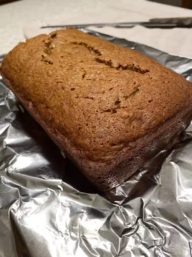

Banana Bread

This mouthwatering banana bread recipe is the epitome of comfort food.
Moist,
tender, and bursting with the natural sweetness of ripe bananas,
it's the perfect treat for breakfast or as a snack any time of the day.
Whether you're a seasoned baker or a beginner, you'll find this recipe easy to follow and
incredibly rewarding. With a hint of warm cinnamon and a generous handful of chocolate chips,
each slice is a delightful balance of flavors that will have your taste buds dancing. Give it a try,
and you'll see why banana bread is a beloved classic in the world of homemade baking.
Ingredients
- 4 ripe bananas
- 1/2 cup unsalted butter, melted
- 1 teaspoon vanilla extract
- 1 teaspoon ground cinnamon
- 1/2 cup granulated sugar
- 1/4 cup brown sugar
- 2 large eggs
- 1 1/2 cups all-purpose flour
- 1 teaspoon baking soda
- 1/2 teaspoon salt
- 1/2 cup chocolate chips (optional)
Steps
- Preheat your oven to 350°F (175°C) and grease a 9x5-inch loaf pan.
- In a mixing bowl, mash the ripe bananas until smoot
- Stir the melted butter into the mashed bananas, followed by the vanilla extract and ground cinnamon.
- Beat in the granulated sugar and brown sugar until the mixture is well combined
- Add the eggs, one at a time, mixing well after each addition.
- In a separate bowl, whisk together the flour, baking soda, and salt.
- Gradually add the dry ingredients to the banana mixture, stirring until just incorporated. If desired, fold in the chocolate chips.
- Pour the batter into the prepared loaf pan and smooth the top.
- Bake for 60-65 minutes, or until a toothpick inserted into the center comes out clean.
- Allow the banana bread to cool in the pan for 10 minutes, then transfer it to a wire rack to cool completely.